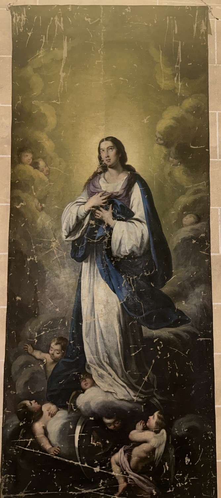

La Immaculada Concepció és el dogma de l’Església Catòlica que afirma que la Verge Maria va ser concebuda sense pecat original per la gràcia de Déu, cosa que la preparà per ser la Mare de Déu. Aquest dogma fou proclamat l’any 1854 pel papa Pius IX, després de molts segles de debat teològic. A Mallorca, aquesta advocació de la Verge Maria també és coneguda com la Puríssima.
Aquesta tela de la Puríssima, que s'emprava com a guardapols de l'escultura de la Puríssima al seu altar, la representa vestida amb túnica blanca i mantell blau, símbols de puresa i celestialitat, respectivament. La mà dreta sobre el pit expressa la seva humil acceptació de la voluntat divina. El nimbe al voltant del cap i la lluna als peus fan referència al llibre de l’Apocalipsi, on s’anuncia l’aparició d’una dona vestida amb el sol, amb la lluna sota els peus i una corona de dotze estrelles al cap.